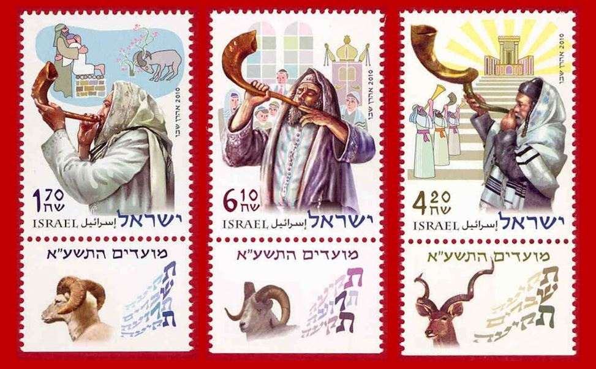

The Shofar: One of a Kind!
The shofar is one of a kind! There is no other musical instrument that has gone through absolutely no change in the whole of its long history of some five thousand years. Moreover, any attempt to "improve" it would make it practically unfit, not kosher, for fulfilling the commandment of blowing.
The children of Israel received this commandment from the Most High some three and a half thousand years ago. All other instruments without exception, from the bone flute to primitive percussion, not to mention the strings, keep undergoing fundamental and cosmetic changes. Technologies develop, new materials appear, and all this drives human genius to look for ever more perfect sound and form.
Meanwhile the shofar, in all its absolute primeval simplicity (the horn of a kosher animal), seems to pay no attention to the others' "competition" in beauty and elegance. Untouched by fashion and influences, it holds fast to its original, primeval essence, not made by hands. It is a symbol of the unshakeable, unchanging, constant, ever-existing Creator. This instrument was made by the Creator Himself.

When I took up the subject of the shofar, I saw my task first of all as studying the horn as a musical instrument and its place in Jewish tradition.
I am trying to understand what it means to listen to the voice of the shofar. What should we expect as we listen? In which direction should one blow, how should one set one's heart when blowing and listening?
At one time I became very interested in the symbolism of musical instruments in the Tanakh. Much has been written about it, and yet many questions remain. I want to understand the instruments "from within", starting with the Hebrew language and the original meaning of their names, from the time when the names of things carried their essence, their direction and their message.
Sometimes one hears sceptical remarks about whether the shofar should be counted as a musical instrument at all. But music is not only consonances, harmonies and passages. Above all it is the images, feelings and revelations it brings to birth. That is what is so overwhelming about the shofar and the sound it pours out. It can work something very important in our souls: it awakens trembling and awe before the Creator, it joins the millennia together, it reaches out of time into eternity. In this sense the shofar is as musical as anything can possibly be…
It was important for me to begin with the shofar for several reasons.
First, there is something that makes us look at this instrument with special attention: it is the one the Most High chose as an instrument for HIMSELF. Of no other musical instrument does the Bible say that the Creator of heaven and earth used it. All the other instruments are meant to serve the LORD, symbolising man standing before his Maker. In a certain sense the voice of the Shofar symbolises the voice of God. It is through this very instrument that the Creator sends us a message of exceptional importance.

No other musical instrument in Scripture is spoken of as much as the shofar. You may find this hard to believe, but the reason is inadequate translations of the Bible, where the shofar has been replaced by another instrument, the trumpet.
Even if we simply compare the number of times they are mentioned in the Tanakh, the shofar is the champion:
שׁוֹפָר — shofar (H7782) — 63 times
כִּנּוֹר — kinor (harp, lyre, H3658) — 41 times
נֶבֶל — nevel (psaltery, H5035) — 37 times
חֲצֹצְרָה — hatsotsra (trumpet, H2689) — 27 times
עוּגָב — ugav (pipe, H5748) — 4 times
חָלִיל — halil (pipe, H2485) — 4 times, and so on.
In brackets: the biblical names of the instruments as rendered in translation, and their Strong's numbers.
There is no other musical instrument that stands at the very heart of a biblical feast whose commandment the Most High Himself gave to His people. The shofar is the only instrument that stands at the centre of a feast and is its "leading character".
The commandment of the "remembrance of the blowing" (Zikhron Teruah, Lev. 23:24) invites us to take up the "score" of Holy Scripture, like music lovers, and to remember, looking and listening closely, a great performance of this work which we may have witnessed long ago, perhaps in our youth…
Besides, it is the most Jewish of all musical instruments. In recent times perhaps only the violin has begun to take on a special symbolic meaning in Jewish culture. But it still can hardly compete with the lineage of the shofar.
Once we understand something about the shofar and about how the Divine Musician, who created all musicians and all creative people, uses it, we can take this understanding and try to apply it to other musical instruments.
See the film on this subject, "The Voice of the Shofar".
The HIGH TASK OF THE SHOFAR is to serve the transformation and improvement of the world. I think this is the most important of its functions. And I think the highest task of all other instruments is to help restore the harmony of the world.